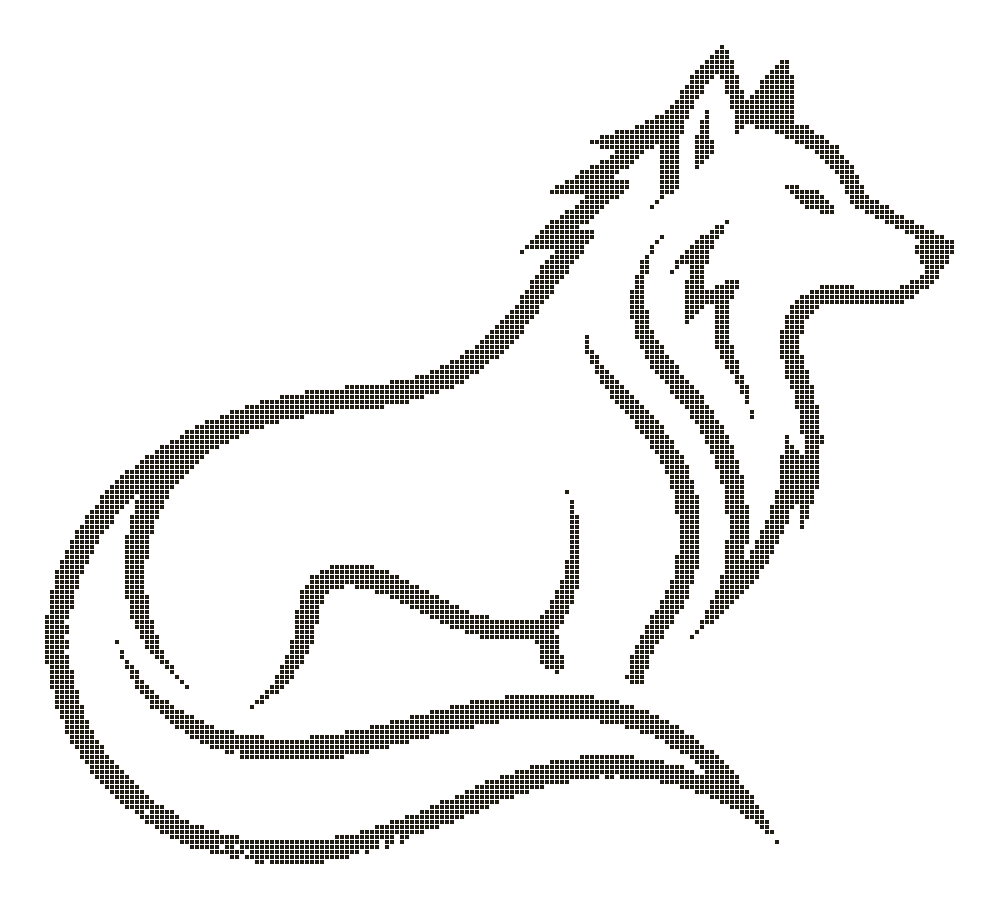
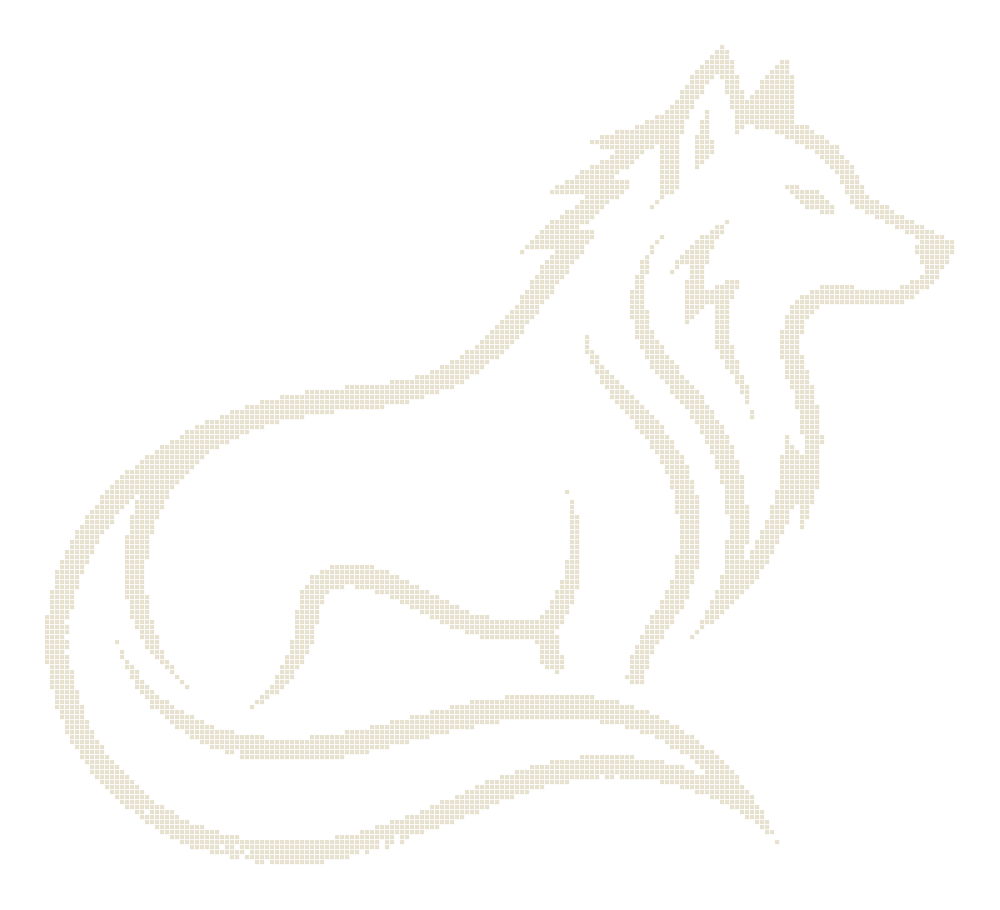

PLATE I — CANIS LUPUS DÆMONIS


Yours, all the way down.
DOWNLOAD THE DESKTOP APP
SELF-HOST
$
curl -fsSL https://nymeriaos.com/install.sh | sh
SELF-HOST
>
irm https://nymeriaos.com/install.ps1 | iex
SELF-HOST
$
uv tool install nymeriaos